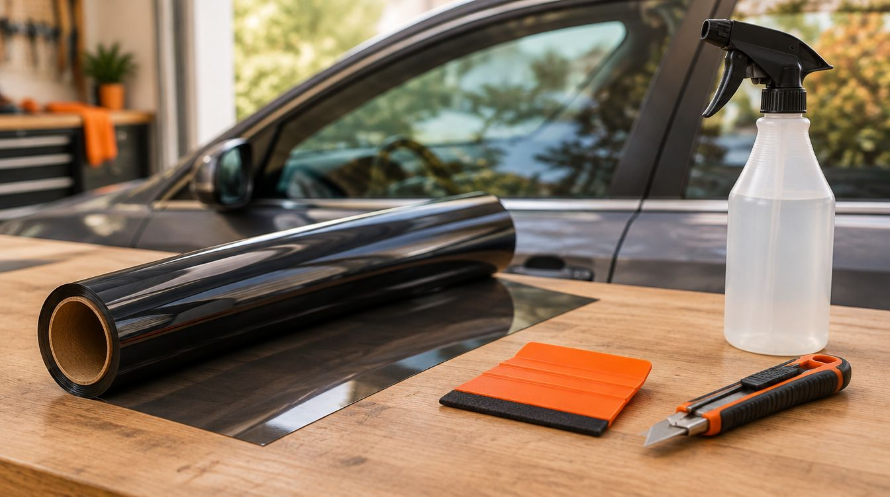
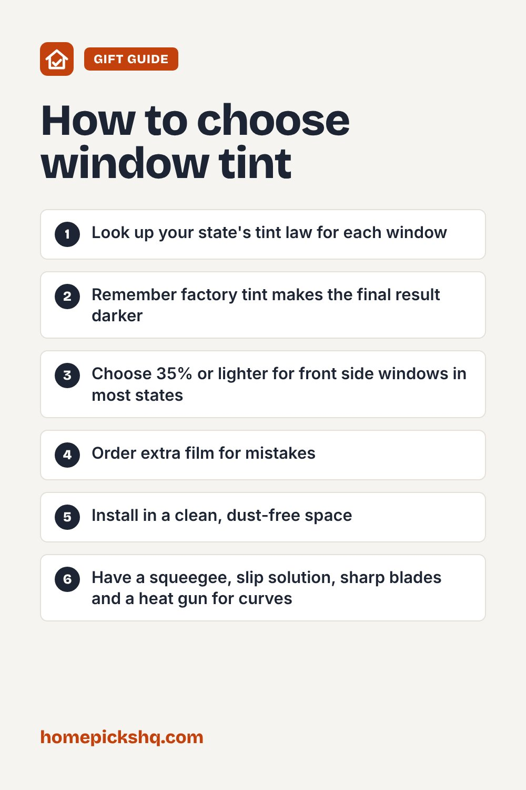

DIY Home Window Tint Film: Heat Reduction, Privacy, and What to Know Before You Install

How we write these guides: we research manufacturer specifications, expert guidance, and verified homeowner feedback. We do not claim to have lab-tested every product. Links to Amazon on this page are affiliate links; see our disclosure.
Applying heat-control solar window film to your home windows is one of the highest-return DIY upgrades you can tackle. A quality film can block up to 85% of incoming solar heat, dramatically lowering air conditioning costs and keeping sunny south- and west-facing rooms comfortable during hot afternoons. It also filters out 99% of damaging UV rays to protect hardwood floors, rugs, and furniture from sun fading, while providing daytime one-way privacy. Here is what Visible Light Transmission (VLT) percentages mean for residential rooms, what to know about daytime vs. nighttime privacy, and how to install it yourself without air bubbles.
Solar Heat-Control & Daytime Privacy Window Film for Homes (Choose VLT & Size)
| Film Type | Static cling (non-adhesive) or light adhesive PET solar film |
|---|---|
| Heat Rejection | Blocks up to 85% of infrared (IR) solar heat |
| UV Protection | Blocks 99% of harmful UV-A and UV-B rays |
| VLT Options | 10% (Maximum heat & glare reduction), 20% (Medium tint), 35% (High daylight) |
| Installation | Soapy water slip solution & squeegee (no messy chemical glue) |
| Removability | 100% removable and renter-friendly with zero adhesive residue |
Pros
- Noticeably drops room temperature in direct sunlight, reducing cooling bills
- 99% UV blockage stops hardwood floors, rugs, art, and furniture from bleaching
- One-way daytime mirror effect prevents street foot traffic and neighbors from looking in
- Static cling design makes setup forgiving—easy to peel back, adjust, and re-spray
- Flat residential window panes are vastly easier to tint than curved vehicle glass
Cons
- No nighttime privacy: when indoor lights turn on after dark, the mirror flips and outsiders can see in
- Requires obsessive glass cleaning and squeegee patience to avoid dust nibs and air bubbles
- Dark, heat-absorptive films should not be applied to thermal dual-pane or Low-E glass
- Requires 48 to 72 hours of cure time for moisture hazing and micro-bubbles to evaporate
Check price on Amazon Price and availability change often. As an Amazon Associate I earn from qualifying purchases.
What VLT Means for Your Home
VLT stands for Visible Light Transmission—the percentage of visible natural light that passes through the film. In a residential home, picking the right VLT balances heat relief against how bright your rooms feel:
- 10% to 15% VLT: A deep tint that delivers maximum heat reduction, heavy glare control, and strong daytime privacy. Ideal for south-facing sunrooms, media rooms with TV glare, or street-level home offices.
- 20% to 25% VLT: The sweet spot for most bedrooms and living areas. It significantly cools down hot spots while still allowing plenty of soft natural daylight inside.
- 35% to 50% VLT: A subtle, light tint that preserves almost full daylight clarity and exterior scenery while still blocking infrared heat and 99% of UV rays.
Daytime Privacy vs. Nighttime Reality
The most common misconception with one-way privacy film is expecting it to work 24/7. One-way mirror films rely entirely on light balance.
During the day, the sun outside is much brighter than your indoor lamps, causing the exterior surface of the film to act like a mirror while you enjoy clear vision looking outside. However, at night, this dynamic reverses. When it is dark outside and your interior lights are switched on, the inside of your home becomes the brighter side. Anyone outside can see straight into your room. You will still need blinds, curtains, or shades for evening privacy.
Static Cling vs. Adhesive Film
For DIY homeowners and renters, static cling film is almost always the best choice over traditional glue-backed films:
- Renter-Friendly: Static cling uses zero glue. It sticks to the glass purely through smooth surface tension and water. When you move out, you can peel it off in seconds with no sticky residue left behind.
- Forgiving Installation: If you place the film crooked or catch a fold during setup, you can simply peel it off, spray more soapy water, and reposition it without ruining the sheet.
- Reusable: If removed carefully and rolled onto its backing paper, static cling film can even be re-installed on other windows.
Double-Pane (Dual-Pane) & Low-E Warnings
If your home has modern double-pane (dual-pane) or Low-E insulated windows, check film specifications carefully before buying. When a very dark, non-reflective film absorbs intense sunlight on the inner pane, that absorbed heat can get trapped in the sealed gas gap between the two panes. This thermal stress can cause seal breakdown or glass fractures. For dual-pane windows, always choose reflective solar films (which bounce heat outward rather than absorbing it) or films specifically certified for insulated residential glass.
Step-by-Step DIY Installation Tips
Installing window tint on flat home windows does not require heat guns or professional training, but it does require cleanliness and patience:
- Deep Clean the Glass Twice: Scrape the glass with a brand-new razor blade or glass scraper to remove paint flecks, tape residue, and hardened dust, then wipe clean with a lint-free cloth.
- Mix a Generous Slip Solution: Fill a spray bottle with cold tap water and add 4–6 drops of gentle baby shampoo or liquid dish soap. This lubricates the glass so the film slides smoothly into position.
- Spray Liberally: You cannot use too much solution. Soak both the window pane and the film as you peel off the clear backing sheet.
- Squeegee from the Center: Place the film onto the wet glass, spray the front of the film lightly (to let the squeegee glide without scratching), and squeegee firmly from the center toward the perimeter.
- Trim the Margins: Use a straight edge and a fresh, sharp utility knife to trim excess film, leaving a 1/16-inch gap around the silicone window gasket so water can escape.
Quick Buying Checklist
- Measure window pane dimensions and order rolls with 1–2 inches of extra margin for trimming
- Choose static cling if you want clean removal or rent your home
- Select 15%–20% VLT for intense afternoon heat and glare; 35%+ to keep rooms bright
- Confirm thermal compatibility if installing on double-pane Low-E windows
- Remember that blinds or shades are still required for nighttime privacy
- Have a spray bottle, baby shampoo, sharp utility blades, and a felt squeegee ready
Check price on Amazon Use the checklist above to compare options. As an Amazon Associate I earn from qualifying purchases.

Free 2026 Home & Kitchen Checklist Pack
Download our printable 1-page buyer checklists for every major room and appliance—dimensions, wattage guide, and common pitfalls to avoid before you order.
Frequently Asked Questions
Does home window film provide privacy at night?
No. One-way mirror films work by reflecting light where it is brightest. During daylight, the outside is brighter so passersby see a reflection, while you can see out. At night with interior lights on, the effect reverses—people outside can see in clearly. You still need blinds or curtains after dark.
Can window film damage double-pane (dual-pane) windows?
Applying very dark, highly heat-absorptive film to the interior pane of a dual-pane or Low-E window can trap heat in the air space between the panes, creating thermal stress that could risk seal failure or glass cracking. For double-pane windows, choose reflective solar films or manufacturer-approved residential films with low heat absorption.
Is static cling window film renter-friendly?
Yes. Static cling films contain zero adhesive glue. They adhere purely through surface tension with water and can be peeled off in seconds without leaving any sticky residue or damaging the glass.
How do you avoid bubbles when installing DIY window film?
Thoroughly clean the glass with a scraper first to remove dust and paint flecks. Then spray an abundance of soapy water (slip solution) on both the glass and the adhesive/static side of the film. Work from the center outward with a felt-edged squeegee to push out water and air pockets.